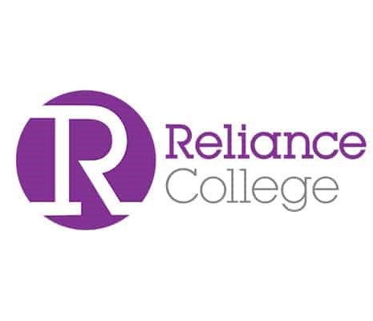

I am thrilled to share that in 2019, I successfully completed my Secondary Education Examination (SEE) from Himalaya Boarding School. This exam marks the end of my secondary education and I am proud of the hard work and determination I put into my studies to achieve this accomplishment. I am particularly proud to mention that I earned a grade point average of 3.60 on my SEE exam, which is a reflection of my dedication and commitment to my education. I would like to express my gratitude to my teachers and parents, who have supported me throughout this journey. This achievement is not only important for my academic career but also it will serve as a foundation for my future aspirations. I am excited to see what the future holds and I am confident that this achievement will lead me to greater opportunities and success.
I am excited to share that in 2021, I successfully completed my School Leaving Certificate (SLC) examination from Reliance College with flying colors. This exam marks the end of my primary education and I am proud of the hard work and dedication I put into my studies to achieve this accomplishment. I am particularly proud to mention that I earned a grade point average of 3.68 on my SLC exam, which is a reflection of my commitment and dedication to my education. I would like to express my gratitude to my teachers and parents, who have supported me throughout this journey. This achievement is not only important for my academic career but also it will serve as a foundation for my future aspirations. I am excited to see what the future holds and I am confident that this achievement will lead me to greater opportunities and success.
.png)
I am currently a student at Herald College in Kathmandu and I couldn't be happier with my choice to study here. The campus is beautiful and the facilities are top-notch. The teachers are knowledgeable and supportive, and the course offerings are diverse and challenging. I am constantly learning new things and expanding my knowledge and skills.Furthermore, the location of the college is perfect, it is situated in the heart of the city, which provides easy access to all the resources and opportunities that Kathmandu has to offer. I am able to explore the city and immerse myself in the local culture.